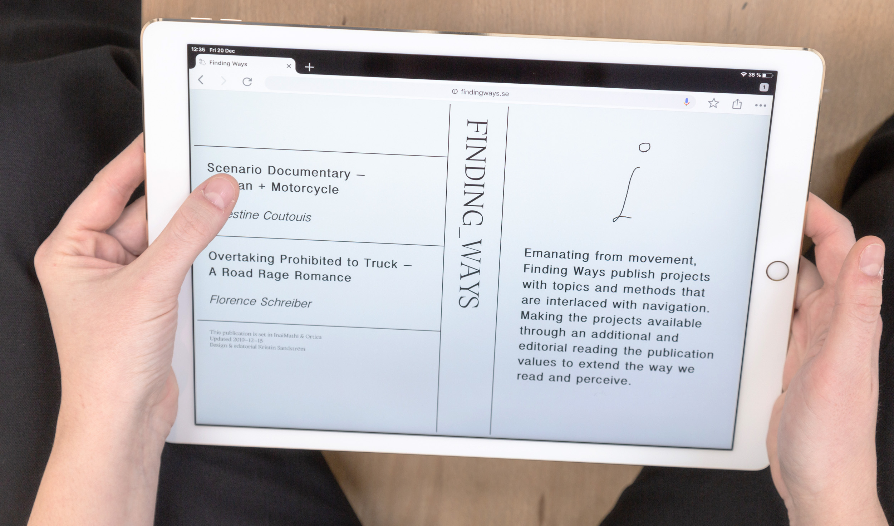

FINDING WAYS
Finding ways is an online publication for projects emanating from movement and/or navigation. In 2019 two artist were invited to share their work. From their material I created an editorial reading.
To web publication →
